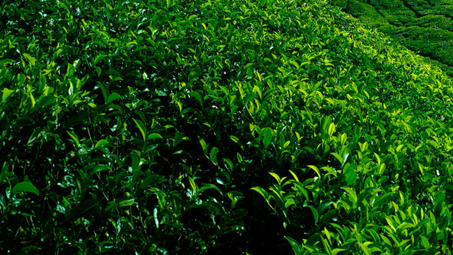

Kerala is renowned for some of its unique cultural and geographical characteristics. The practices and traditions handed down from generation to generation, alongside some of the natural wonders that we have been blessed with have attracted people to this land for centuries. From the ancient healthcare system ofAyurveda to our picturesque hill stations and diverse wildlife, we provide you with links to access a wide range of our specialities. We believe it is our duty to share these gifts with the rest of the world. These specialities of God’s Own Country that are linked below shall be useful in narrowing the search and guiding you to your preferred destination along with providing the requisite information.

kumarakom

kollukumallay

pookottu lake

periyar
kakkathuruth